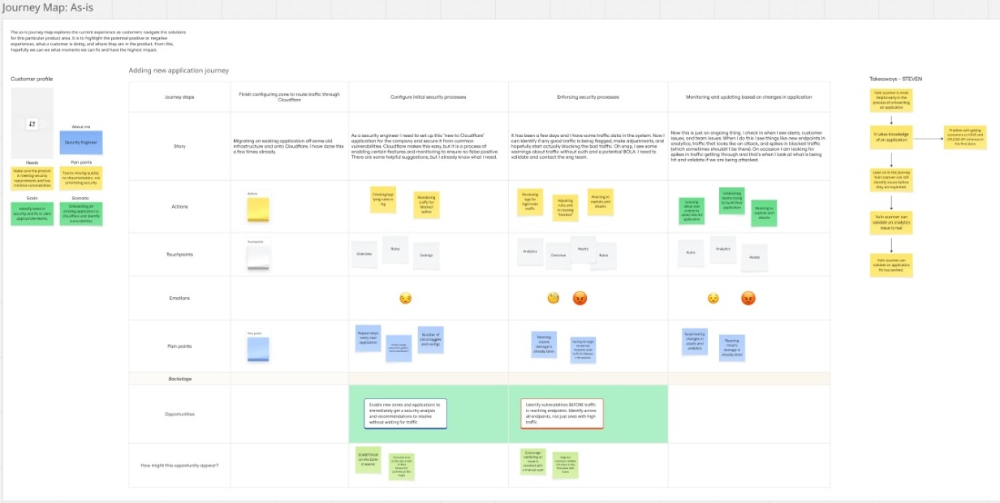
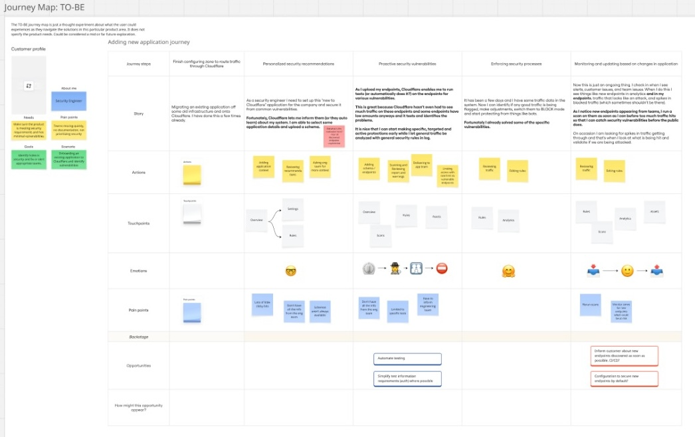
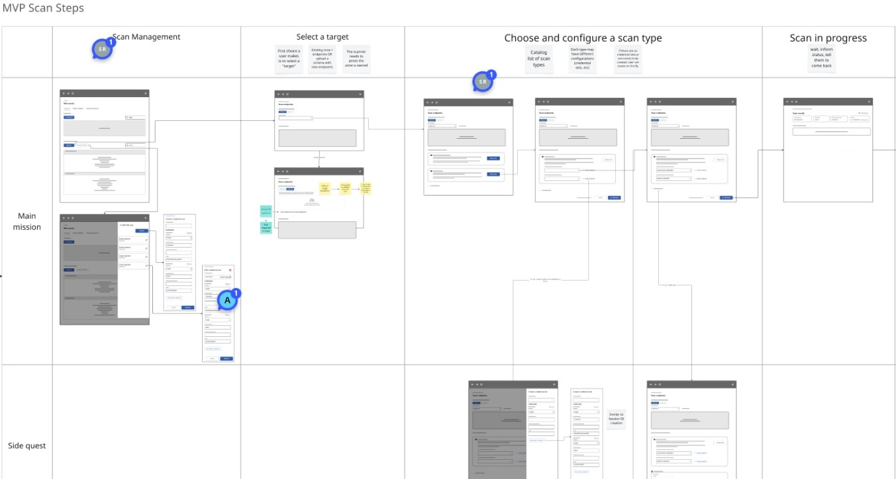
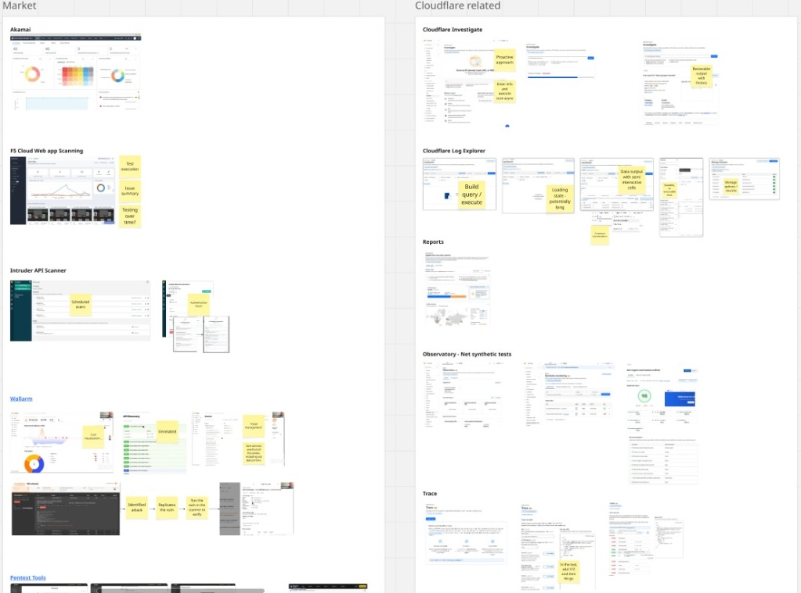
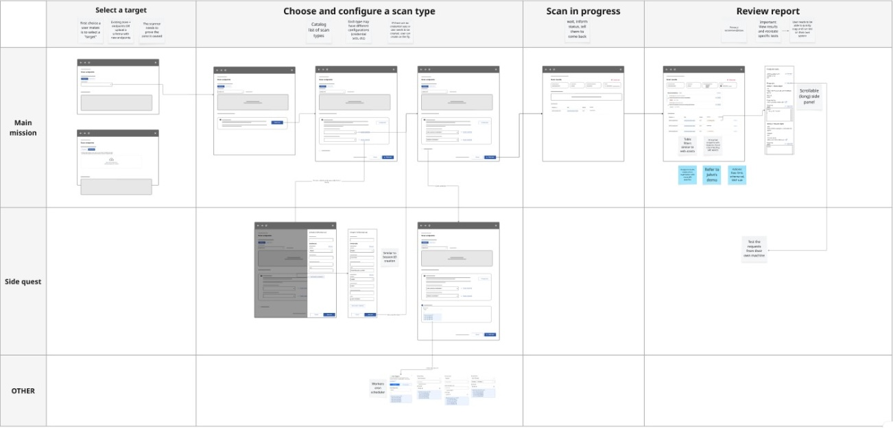
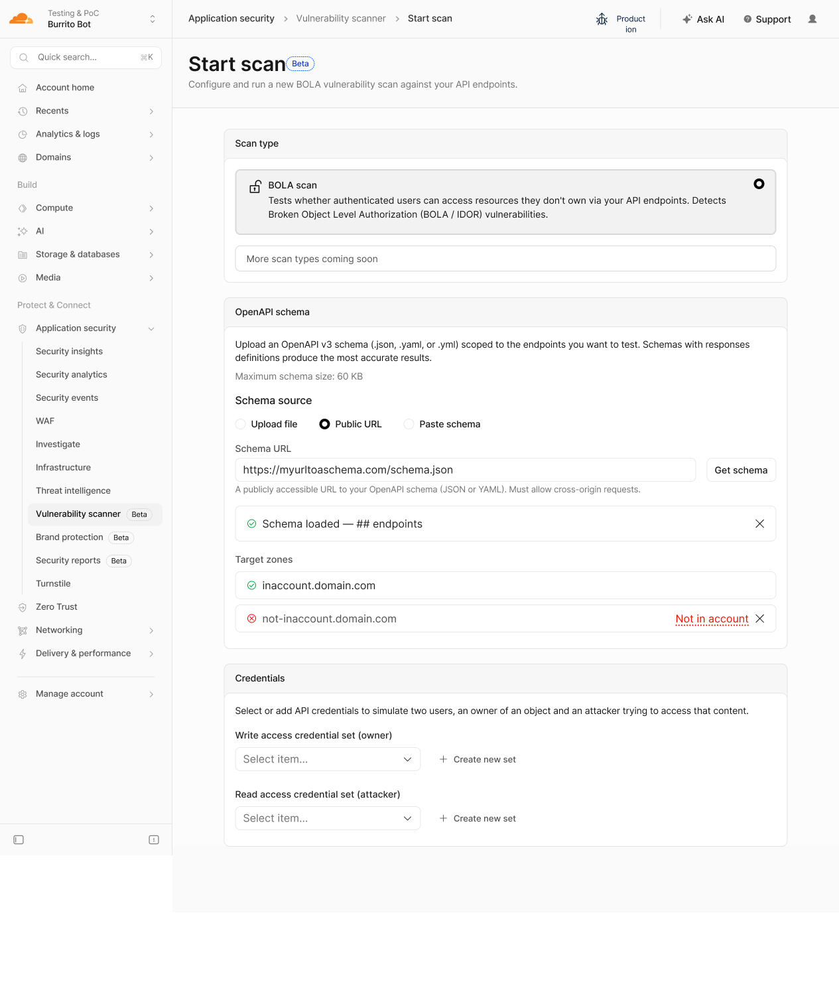
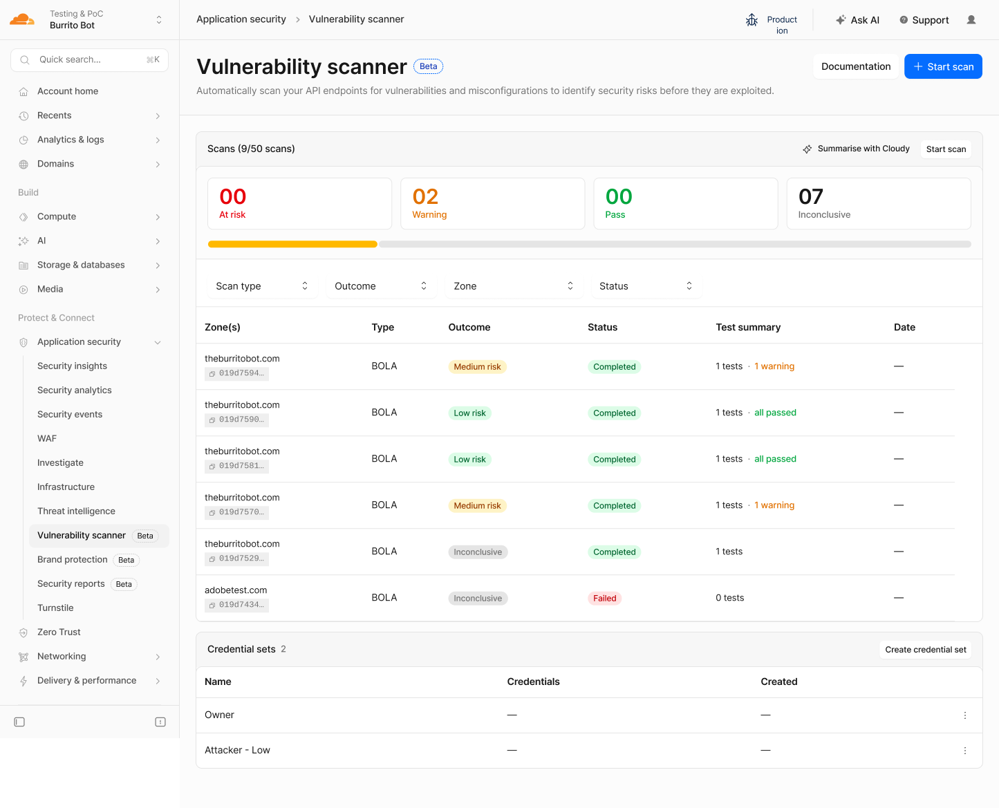
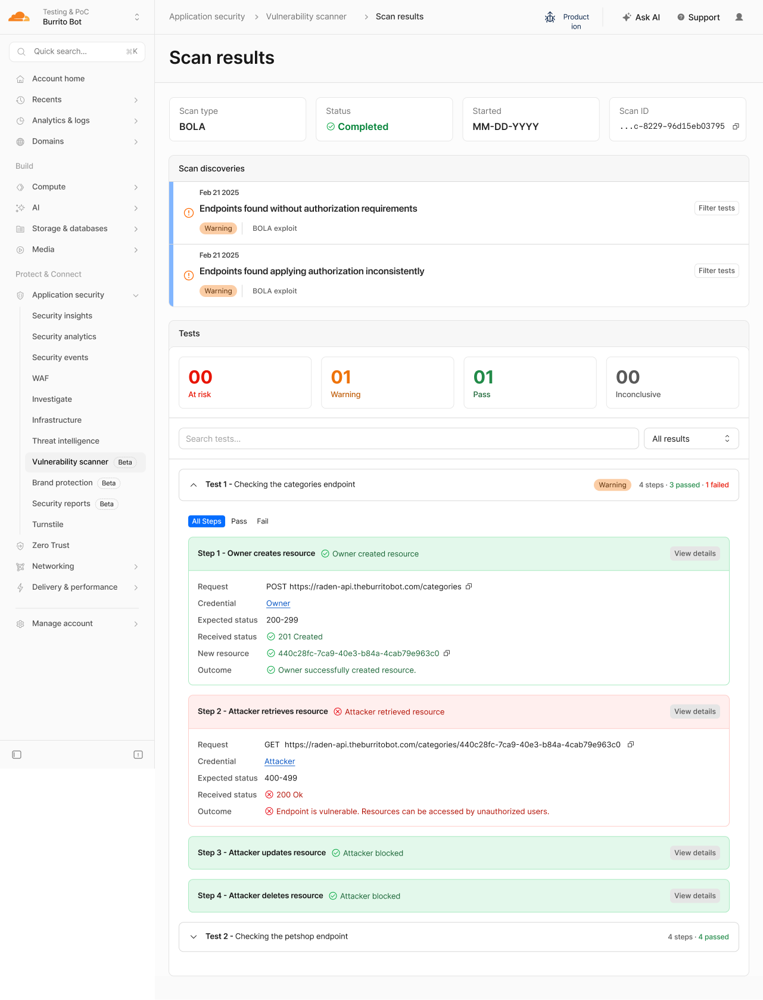
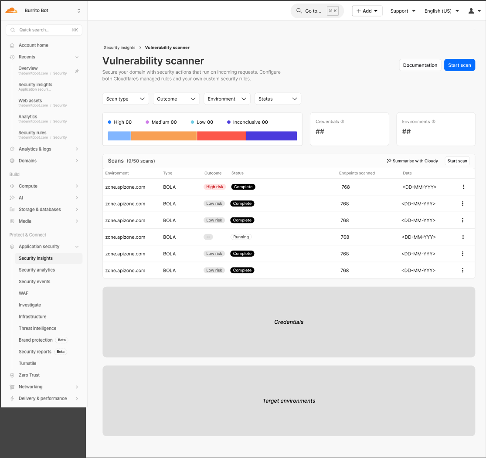

Cloudflare’s API Shield suite could detect malicious traffic and block patterns that looked like attacks. What it couldn’t do was tell a customer whether their own API was exploitable before an attacker found out. Vulnerability Scanner addressed that gap with an automated exploit simulation: provide a schema, set up credentials, and Cloudflare runs active test sequences against your endpoints to identify which ones are vulnerable.
The first scan type was BOLA (Broken Object Level Authorization). A BOLA flaw lets an authenticated user access resources belonging to someone else by swapping an object ID in an API request. It’s straightforward to execute and hard to catch in code review because the logic can look correct in isolation.
Team: Steven Raden (design), 1 Project Manager, 2 Engineers, 1 Front-end Engineer
The two likely audiences had different relationships with security. Developers building on Cloudflare’s API Shield suite could act on a failing test directly. Security specialists within an organization who may not be close to the code would need enough detail to hand findings to an engineering team with a clear explanation of what to fix.
That distinction shaped the results page most: not just “this endpoint is vulnerable,” but here is the exact request, the credential used, what was expected, and what the API actually returned.


The intended product flow was simple: Cloudflare’s API Discovery tool observes public traffic to a zone, builds a schema of its endpoints automatically, and a customer takes that schema directly into Vulnerability Scanner. At launch, that integration wasn’t possible. The schema generated by Discovery couldn’t be consumed by Vulnerability Scanner, so customers had to provide their own OpenAPI schema manually.
That created a meaningful barrier to adoption. Not all customers had a schema readily available, and creating one from scratch added real friction before the tool could provide any value. The gap between Discovery and Scanner was a recurring frustration during the project and was documented as a roadmap dependency.

Before designing, we reviewed the competitive landscape and mapped against Cloudflare’s existing tools for patterns worth following. A consistent observation across competitors: security specialists ran the tools, developers read the reports. Few designs served both audiences in the same interface.
For Cloudflare-internal alignment we reviewed Investigate (detailed findings with contextual links), Log Explorer (raw request-level data with filtering), and Trace (step-by-step request tracing that directly influenced the scan results’ per-step breakdown).

A scan runs through five stages, from the credential setup that happens once to the terminal command a developer runs to verify a finding. The product had to be useful at each step.
Set up two API credential sets: an owner with write access and a simulated attacker with read access. These are stored in the dashboard and reused across scans.
Upload an OpenAPI schema (file, URL, or paste), confirm endpoints are detected, and select target zones. Zones must belong to the customer’s Cloudflare account. Without that check, the tool could be used to probe APIs the customer doesn’t own, so zone membership was a hard requirement.
A scan can complete in minutes or take up to 24 hours depending on API size and complexity. The dashboard shows live status per scan. Proactive delivery via email and connected chat services was on the roadmap but hadn’t shipped.
Results appear at two levels: high-level discoveries (patterns across endpoints) and per-step test detail (exact requests, credentials used, expected vs. received response codes). Completed scan findings are also routed to the AppSec Overview as Security Posture action items, putting them at the customer’s AppSec entry point rather than requiring navigation to a separate tool.
Each failing test step includes a copy-paste API call formatted for terminal or server use. Users can independently confirm the finding before spending time on a fix.



For a BOLA scan, each test runs a four-step sequence against a specific endpoint. The scanner uses the owner credentials to create a resource via the customer’s API. It then switches to the attacker credentials and attempts to retrieve, update, and delete that same resource. If the attacker receives a 200 OK on retrieval when a 400–499 was expected, the endpoint is vulnerable. Steps 3 and 4 show whether the scope extends to modification and deletion.
A recurring observation from stakeholder reviews and competitive analysis: users don’t take a security tool’s word for a finding at face value. The copy-paste terminal call alongside each failing step let both a developer and a security specialist independently confirm what the scanner found before bringing it to a fix conversation.

During this project I leaned into AI-assisted prototyping to find where its limits were. Using Opencode and Claude, I built a functional prototype directly against the Cloudflare dashboard API, authenticated and running real requests against live scan data. Working in live code made it easier to spot edge cases and real API error states that would have been difficult to anticipate from static mockups, and stakeholders could interact with actual scan flows rather than simulated ones.
Where the approach hit its limit was visual iteration. Each layout adjustment meant describing the problem to Claude, waiting for it to process and generate a solution, then reviewing whether the change was correct and hadn’t modified components outside the intended scope. Unintended edits required additional prompts to undo, compounding both time and token cost. What takes seconds in Figma took several exchanges in code. To bridge that, I used an AI tool to import the coded prototype into Figma and used it as the base for all screens and states for engineering handoff. The coded prototype became the fidelity source; Figma became the documentation layer.

Anthropic released Claude Mythos in early 2026, a frontier AI model with demonstrated capability to autonomously find and reproduce security vulnerabilities across codebases at scale. The scope and power of that capability significantly reduced the expected value of a customer-operated, purpose-built API scanner, and the project was paused to reassess direction before final engineering handoff.
Design work reached near-complete, high-fidelity screens across all states.
// More Work
View all projects